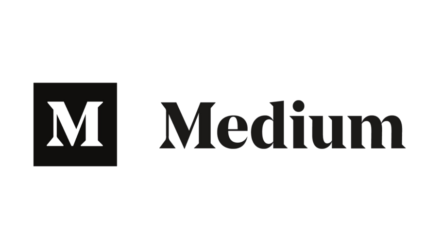

Versionamento de edições
| Data | autor | Descrição | Versão |
|---|---|---|---|
| 26/03/2019 | William Elias Alves | Inserção da visão geral da aplicação | 0.1 |
| 30/03/2019 | William Elias Alves | Inserção da tabela de integrantes e descrição da aplicação | 0.2 |
| 31/03/2019 | William Elias Alves | Alteração da logo do MEDIUM | 0.3 |
| 03/04/2019 | William Elias Alves | Inserção do texto no mkdocs | 0.4 |
| 08/04/2019 | William Elias Alves | Inserção da tabela de versionamento | 0.5 |
Visão Geral
Repositório destinado a documentação dos modelos usados durante o processo de Engenharia de Requisitos, dentro do escopo da disciplina de Engenharia de Requisitos da Universidade de Brasília.
Engenharia de Requisitos
É a área da engenharia de software preocupada com os requisitos de software,e se dá por meio da coleta de requisitos, análise, modelagem e documentação dos mesmos.De uma forma mais direta, ela ocorre - não necessariamente de forma sequencial - por meio das seguintes etapas:
- Pré-rastreabilidade
- Elicitação de requisitos
- Modelagem
- Análise
- Pós-rastreabilidade
Dados da aplicação escolhida
A aplicação na qual serão aplicados conceitos e práticas de Engenharia de Requisitos é a plataforma de publicação e leitura MEDIUM. Ela está acessível através de um site e também por meio de aplicação mobile android/ios.

- Fundador: Evan Williams
- Data de lançamento: 15 de Agosto,2012
- Site Oficial: Medium
- Proprietário: MEDIUM corporation
- Principais Concorrentes:
- Com foco em publicação textual/blog: Wordpress, squarespace
- Com foco na leitura: Tumblr
Integrantes
| Nome | |
|---|---|
 |
Aline Laureano |
 |
Gabriel Filipe |
 |
Guilherme Marques |
 |
Luis Cláudio |
 |
Matheus Blanco |
 |
Pedro Rodrigues |
 |
William Elias |